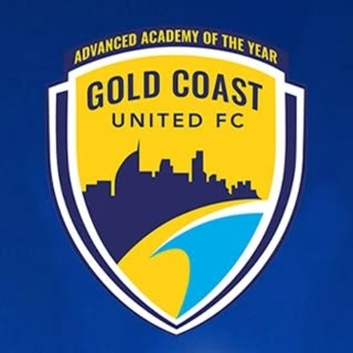

Olympic FC Team Hub · assets
Club crests
Every crest is shown in the app's circular treatment, at the 64 px and 30 px sizes it appears in. Green tiles are club artwork saved in
assets/crests; amber tiles are hotlinked from the club's website until a PNG is dropped in under the filename shown. Portrait badges sit in a white circle rather than being cropped.In the project6 clubs · club artwork

Moggill FC
Fixtures list them as MFC Kangaroos
mfc-kangaroos.png
Lions FC
Also used for Lions Orange & Lions Blue · 167 px source, ask the club for hi-res
lionsfootballclub.com.aulions-fc.png

Gold Coast United FC
320 px JPEG source, ask the club for hi-res
goldcoastunitedfc.com.augold-coast-united.png
Hotlinked from the club's website9 clubs · drop a PNG in to make permanent